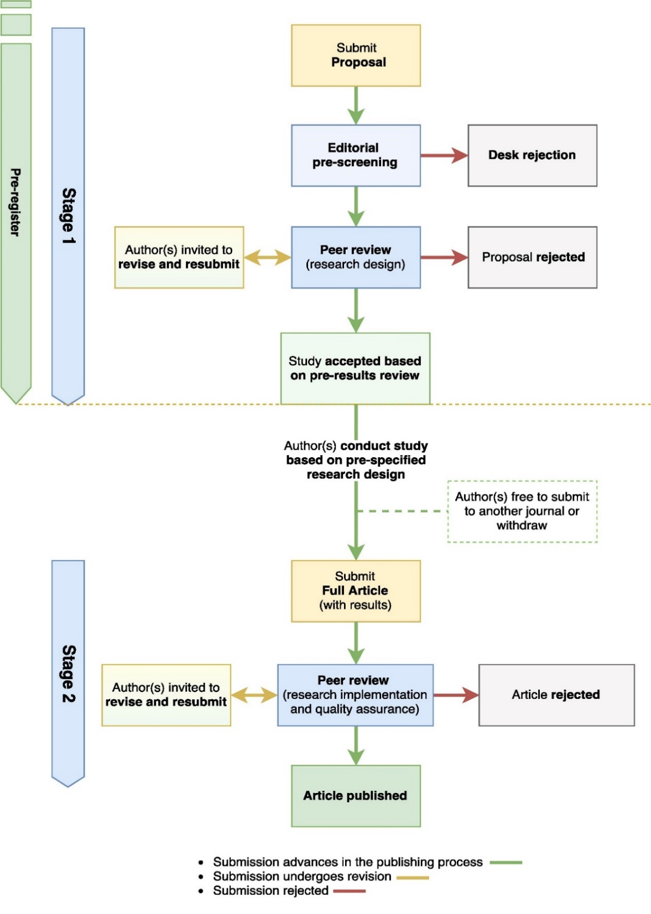

Journal of Development Economics
Pre-Results Review (Registered Reports)
Guidelines for Authors
Introduction
The Journal of Development Economics (JDE) now offers authors the opportunity to have their prospective empirical projects reviewed and approved for publication before the results are known. This pre-results review track for submissions is based on a two-stage peer review process, during which authors receive feedback on both the research design and proposed statistical analysis plan (Stage 1) and the full manuscript (Stage 2). Throughout the publishing process, we will refer to articles in this track as “Registered Reports”, in line with the terminology adopted by journals in other disciplines and the existing Elsevier publishing infrastructure.
Stage 1 submissions for pre-results review (referred to in the submissions portal as “Registered Report Stage 1: Proposal”) typically include key background literature and motivation for the study, hypotheses, study procedures, proposed statistical analysis plan, a statistical power analysis, and pilot data (if applicable). Following peer review, high-quality Stage 1 Proposals are accepted based on pre-results review, after which authors implement the pre-specified research design and submit a full manuscript (referred to in the submissions portal as “Registered Report Stage 2: Full Article”), including results and discussion sections. This final manuscript is appraised by reviewers for quality assurance and then published, provided that the implementation of the data collection and analysis maintains high standards of quality (see Appendix A: Flowchart of the Pre-Results Review Process at the JDE).
The pre-results review track is designed to award well-designed and well-executed studies regardless of whether their empirical results yield clear interpretations. With that in mind, we envision that this track for submissions will be particularly attractive to development economists working on research projects for which the data is yet to be collected (or researchers who have not yet had access to the data they will analyze). Submissions where follow-up data have been collected (outside of pilot and baseline data) are in principle not eligible for this track. Work should be submitted at a minimum of three months, but ideally six months to a year, before data collection of the key outcome data. All participants in the review process including the authors, the referees, and the editors must be blind to the key outcome variables throughout Stage 1.
Submissions for pre-results review follow the same publishing policies and formatting rules as regular submissions outlined in the JDE Author Information Pack, including the JDE Mandatory Replication Policy. In addition, submissions for pre-results review must follow the guidelines outlined below. Other useful resources include:
For further questions, please contact either Editor Prof. Dean Karlan (karlan@northwestern.edu) or Editor in Chief Prof. Andrew Foster (afoster@brown.edu).
Pre-Results Review at the JDE
Stage 1
Submission Details
New submissions for pre-results review should be submitted as a “Registered Report Stage 1: Proposal” through the EVISE submissions portal. Stage 1 Proposals should not exceed 60 pages including figures, tables, schemes and references, and should be submitted as a .doc or .pdf document.
Beyond details on the research question(s), literature review, hypotheses, research design and statistical analysis plan, the following items are required for Stage 1 Proposals:
Cover Page, including title of the study, date of the latest draft, author name(s) and institutional affiliation(s), keywords, JEL codes, and study pre-registration status[1];
Proposed timeline for completion of the study, if accepted based on pre-results review following Stage 1 review;
-
Abstract of up to 150 words;
Administrative Information (included at the end of the submission), including confirmation of ethics approval, status of funding, conflicts of interest, and acknowledgments.
Authors may refer to the optional Stage 1 Submission Template for guidance on the content of your Stage 1 Proposal. While not required, the template may serve as a helpful resource for documenting your research design.
Stage 1 Proposals may include pilot data to establish proof of concept, effect size estimations, and/or feasibility of proposed methods. Any pilot trials will be published with the final version of the manuscript and will be clearly distinguished from data obtained for the pre-specified research design. For more details and instructions for sending data and figures, please see the JDE Mandatory Replication Policy.
Review Criteria and Editorial Decisions
Stage 1 Proposals will be pre-screened by the Editorial Board for completeness and to ensure they fall within the scope and quality standards of the JDE in terms of their
- topic,
- potential contribution to the development economics literature, and
- methodological rigor.
-
The importance of the research question(s), in terms of its contribution or value added to the development economics literature;
-
The logic, rationale, and plausibility of the proposed hypotheses;
-
The soundness and feasibility of the methodology and statistical analysis plan (including statistical power analysis, where appropriate). The proposed timeline for completion of the study will not have an impact on the editorial decision at Stage 1. However, authors will be expected to comply with it and communicate changes to the Editorial Board in a timely fashion;
-
Whether the clarity and degree of methodological detail are sufficient to replicate the proposed experimental procedures and statistical analysis plan in line with the JDE Mandatory Replication Policy;
-
Whether the authors have pre-specified sufficient outcome-neutral tests for ensuring that the results obtained can credibly test the stated hypotheses, including data quality checks for data accuracy, consistency, bias, and completeness.
Following Stage 1 of peer review, submissions will be either 1) rejected; 2) returned to authors for the opportunity to revise and resubmit; or 3) accepted based on pre-results review. Pre-results acceptance constitutes a commitment by the journal to later publish the resulting full paper, subject to a successful Stage 2 review. Accepted Stage 1 submissions will not be published as stand-alone articles. However, authors are required to submit accepted Stage 1 Proposals as supporting material to their Stage 2 submissions. Stage 1 Proposals will be included in the appendix of the published article.
The JDE encourages authors to include articles accepted based on pre-results review as forthcoming publications in their CVs, acknowledging that they were accepted as part of the pre-results review process.
After Pre-Results Acceptance and Before Stage 2
-
Once accepted based on pre-results review, authors can proceed with data collection and analysis based on the accepted research design, and then submit a full manuscript for Stage 2 review. Authors should be reminded that in line with JDE Mandatory Replication Policy, data will be posted on the JDE website alongside the article. Moreover, authors may be asked to submit the data, programs, and other details of the computations sufficient to permit replication at the review stage, if requested by the reviewers or the Editor.
-
Authors are free to withdraw their submission at any time, or submit it to another journal. The JDE Editorial Board does not consider submission for a pre-results review to be an implicit contract to first try to publish at JDE upon completion of the final paper. Authors are therefore free to first try for “top 5” journals, for example. Note however, that the Stage 1 proposal or the Stage 2 full paper must not be submitted to another journal while the respective manuscript is under review at the JDE. The Editorial Board therefore asks that corresponding authors notify the JDE if they decide to submit the full paper to another journal. Should the paper be rejected by the other journal, the JDE will observe the pre-results acceptance for up to five years after it was granted.
-
If the full paper is accepted at another journal, the corresponding author should notify the JDE. The JDE also asks that working papers and published papers acknowledge that the article underwent peer review and was accepted based on pre-results basis at the JDE, citing the “Prospective Articles” document.
-
Some deviations from the pre-specified research design are often inevitable, but should be clearly documented and included in the Stage 2 submission. To learn more, see “Deviations from the Pre-specified Research Design” below.
Stage 2
Submission Details
After completing data collection and analysis as specified in the accepted Stage 1 Proposal, authors should submit their full-length manuscript as a “Registered Report Stage 2: Full Article” through JDE’s submissions portal, along with the accepted Stage 1 Proposal as supporting material. Authors may use the accepted Stage 1 submission as a base for their Stage 2 submissions, including the introduction, research design and proposed statistical analysis sections.
Note that the results of all hypotheses pre-specified at Stage 1 must be included in the full manuscript submitted at Stage 2. Authors are free to conduct exploratory analyses (not fully pre-specified in the in Stage 1 submission) in addition to the analyses specified at Stage 1, and include their results in the full paper at Stage 2. However, these results must be clearly caveated as a result of exploratory analyses. In instances where a pre-specified hypothesis is subsequently shown to be logically flawed or unfounded, authors may include it in an Appendix (if particularly lengthy) or as a footnote, rather than in the “Results” section.
Authors should note that Stage 2 Full Article submissions should follow the same publishing policies and formatting rules as regular full length articles submitted to the JDE, including guidelines and policies on Publishing and Ethics, the JDE Mandatory Replication Policy, Data Sharing instructions, Copyright policy and Artwork and media formatting instructions. Please review these policies before you start preparing your final submission.
Review Criteria and Editorial Decisions
The Editorial Board will make an effort to ensure that manuscripts at Stage 2 are considered by the same reviewers as at Stage 1, however they may also invite new reviewers. To ensure continuity, reviewers at Stage 2 will have access to the original Stage 1 Proposal submission that was accepted based on pre-results review.
In considering full manuscripts at Stage 2, reviewers will be asked to evaluate:
-
Whether the study was implemented according to the research design pre-specified at Stage 1. This involves an evaluation of whether the study implementation maintained high standard of quality, particularly whether the attrition rate was high in the given context, or there was a high differential attrition between treatment and control groups;
-
Whether the collected data is of sufficient quality to test the pre-specified hypotheses. In particular, whether the pre-specified data quality checks were satisfied and descriptive statistics provide convincing evidence that the data can credibly measure the impact of the intervention;
-
In cases of deviations from the pre-specified research design, whether the author(s) provided a convincing theoretical and/or methodological justification;
-
Whether any exploratory analyses added by the authors are justified, methodologically sound, and informative. Exploratory analyses must be clearly noted, and the results of all hypotheses specified in the Stage 1 submission must be reported.
-
Whether the author's’ interpretation of the research findings are consistent with the data and the overall evidence.
Following Stage 2 of peer review, submissions will be either 1) accepted for publication, 2) returned to the authors to revise and resubmit, or 3) rejected as no longer eligible for publication in the pre-results track (see next section for possible reasons for rejection at Stage 2).
Editorial decisions will not be based on the perceived importance, novelty or conclusiveness of the results. This is a key feature of pre-results review. Whereas reviewers are free to enter such comments on the record, they will not influence editorial decisions. Reviewers at Stage 2 may suggest that authors report additional tests which were not pre-specified, however, authors are not obliged to do so unless such tests are necessary to satisfy one or more of the Stage 2 review criteria.
Deviations from the Pre-specified Research Design
It is reasonable to expect that pre-specified research designs may sometimes run into practical difficulties in their implementation. Authors should keep records of all instances when the study could be completed as specified, and clearly report and justify them in their Stage 2 Full Article submission. If authors want to discuss the context and provide justification for deviations in greater detail, they may choose to attach a cover letter to their Stage 2 submission.
In principle, deviations resulting from a limited uptake of an intervention which was conducted as specified (e.g. if the treatment group persistently failed to comply with the intervention, or the intervention proved impractical) may be justifiable. However, authors should anticipate such challenges as much as possible in their Stage 1 submission and propose measures to prevent them.
In all instances of deviations, the Editorial Board will determine whether they were clearly reported and justifiable on theoretical and/or methodological grounds. The Editorial Board may decide that the study is no longer eligible for publication in the pre-results review track in any of the following cases:
-
The study was not conducted as specified, but not all deviations were reported;
-
The Stage 2 Full Article submission failed to report the results of any of the pre-specified hypotheses;
-
A different intervention than pre-specified was conducted or the pre-specified intervention was only partially implemented, including due to natural disasters, political violence, and other objective circumstances;
-
The study suffered from a large sample size attrition and related statistical power level;
-
Exploratory analyses were reported as pre-specified;
-
The study used different variables (or the variables were not constructed as pre-specified) without also reporting the outcomes with the pre-specified variables;
-
The study used different rules for excluding observations without also reporting the analysis outcomes with the pre-specified exclusion rules;
-
The study used a different statistical model, but failed to report the outcomes of the pre-specified statistical model;
Regardless of the type of deviation(s), editorial decisions will not be based on the perceived importance, direction, novelty or conclusiveness of the results of the study. If a deviation is major, for example a change in the primary hypothesis, then the authors have the option of withdrawing this Stage 2 Full Article submission and submitting it as a new “normal” submission. In such cases, the authors should not perceive there to be any change in the likelihood of acceptance, compared to the probability they would have had without the pre-results review process.
Pre-registration Resources
The JDE strongly encourages authors to pre-register their research designs on publicly available hypothesis repositories at Stage 1 prior to the commencement of data collection. By pre-registering their studies, authors create public records that would allow readers to clearly see which analyses were pre-specified, thereby ensuring the validity of the research findings. To protect the integrity and confidentiality of studies which are still in progress, registries allow authors to embargo a pre-registration for an extended amount of time, some up to 5 years.
The American Economic Association (AEA) administers a registry for randomized controlled trials (RCTs), which can be accessed here. This has become a standard hypothesis registry in economics, however authors are free to choose another registry, such as the Registry for International Development Impact Evaluations (RIDIE), the Open Science Framework (OSF) registry, AsPredicted.org or ClinicalTrials.gov.
Information about pre-registration should be included in the Cover Page section, including the registry name, registration identifier, and/or a link to the public registration if available. If the study has not been pre-registered at the time of submissions, authors should indicate whether they plan to complete pre-registration before the commencement of data collection.
Tips for Avoiding Desk Rejection at Stage 1
Stage 1 Proposal submissions may receive a desk rejection prior to in-depth peer review if submissions are incomplete or are not considered a good fit for the JDE in terms of the topic, methods or contribution to the development economics literature. The following are some other reasons for desk rejection, and tips for how to avoid each:
- Reason for Rejection: Submission are incomplete or the necessary details of the research design are not reported clearly and in sufficient detail.
-
Tip: Authors are encouraged to consult the Stage 1 Submission Template for guidance on suggested information to include. All Stage 1 submissions should include cover page, abstract, proposed timeline and administrative information section in addition to sections on research design and statistical analysis plan. The research design and analysis should include sufficient detail to enable reviewers to evaluate the submission in the light of the Stage 1 criteria outlined above.
-
Reason for Rejection: Lack of correspondence between the pre-specified hypotheses and the statistical tests.
-
Tip: To maximize clarity of correspondence between predictions and analyses, authors are encouraged to number their hypotheses in the introduction section and then number the proposed analyses in the methods section to make clear which analysis tests which prediction. Power analysis, where applicable, should be based on the actual test procedures that will be employed to test those hypotheses.
-
Reason for Rejection: Statistical power analysis is over-optimistic or insufficiently justified.
-
Tip: Stage 1 submissions should be powered to detect effect that is plausible and of theoretical value. Pilot data can help inform this estimate but is unlikely to form an acceptable basis, alone, for choosing the target effect size.
-
Reason for Rejection: Failure to clearly distinguish work that has already been done from work that is planned.
-
Tip: Where a proposal contains a mixture of (pilot) work that has already been undertaken and a proposal for work not yet undertaken, authors should use the past tense for pilot work but the future tense for the proposed work. At Stage 2, all descriptions should shift to past tense.
-
Reason for Rejection: Limited or unclear contribution to the literature.
Tip: Authors will commonly use pre-analysis plans as a base to prepare Stage 1 Proposal for pre-results review. However, Stage 1 Proposals go a step further and require that authors outline the importance of the proposed study in terms of its contribution or value added to the development economics literature (see criterion 1 of the Stage 1 review criteria above). Successful Stage 1 Proposal will mirror full-length conventional articles, with the exception of the ‘Results’ and ‘Discussion’ sections.
Appendix A: Flowchart of Pre-Results Review Process at
the JDE

[1] Authors are strongly encouraged to pre-register their research designs on publicly available hypothesis repositories prior to commencement of data collection. For more information, see “Pre-registration Resources” section.